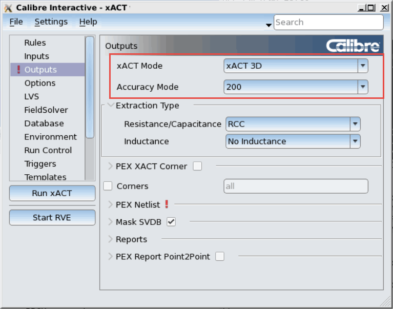

In Calibre
Interactive - xACT the default extraction mode is set to xACT. Use
xACT Mode to change the extraction mode.
Procedure
- Click Outputs to
display the Outputs pane.
- Select the xACT Mode. Click the dropdown list
arrow to display the list of available xACT Mode options. Choices
are:
- xACT
Run Calibre xACT.
- xACT 3D
Run Calibre xACT 3D. This choice invokes
the 3D field solver for parasitic capacitance extraction and analysis.
- xACT 3D Select
Run Calibre xACT 3D select net extraction
using the 3D fieldsolver for parasitic capacitance on specific nets.
Select xACT 3D.
The xACT 3D and xACT 3D Select modes display the
Accuracy Mode dropdown list. Choices for accuracy mode are 200 or
600. Setting the Accuracy Mode to 600 is more accurate, but will
significantly increase runtime. The default field solver accuracy
mode is 200.
Figure 1. Outputs Pane for xACT 3D xACT Mode Selection